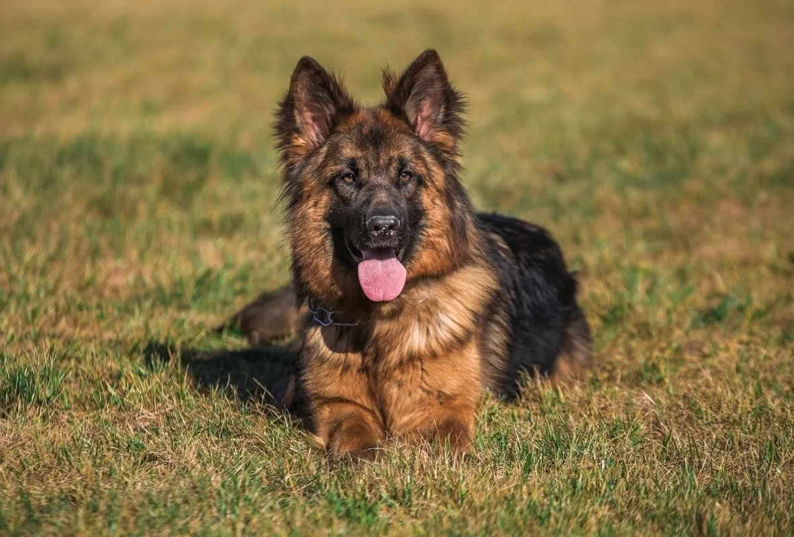

Owczarek niemiecki – jedna z ras psów należąca do grupy psów pasterskich sklasyfikowana do sekcji psów pasterskich. Według klasyfikacji FCI podlega próbom pracy. Zaliczany do psów obronnych. Typ wilkowaty
Owczarek niemiecki – jedna z ras psów należąca do grupy psów pasterskich sklasyfikowana do sekcji psów pasterskich. Według klasyfikacji FCI podlega próbom pracy. Zaliczany do psów obronnych. Typ wilkowaty.

Owczarki to rasy psów, które zostały wyhodowane do pilnowania owiec.Oto kilka przykładów ras owczarków:
owczarek belgijski
owczarek australijski(typ amerykański)
owczarek szkocki
owczarek podhalański
owczarek holenderski
owczarek chorwacki
owczarek francuski beauceron
wczarek francuski briard
border colie
Czym różnią się owczarki od psów pasterskich i psów zaganiających?
psy zaganiające wykorzystywane były podczas długich wypraw np. z rancza na targowisko w porcie. Ich rolą było pilnowanie zwartego szeregu zwierząt by długi marsz przebiegał sprawnie
owczarek jest przede wszystkim pomocnikiem owczarza – ruchliwy, zwinny i inteligentny, wyszkolony szybko reaguje na komendy pana i pomaga mu kierować stadem owiec
pies pasterski ma za zadanie pilnować – ich praca polega na trzymaniu się blisko stada i zabezpieczaniu go przed drapieżnikami